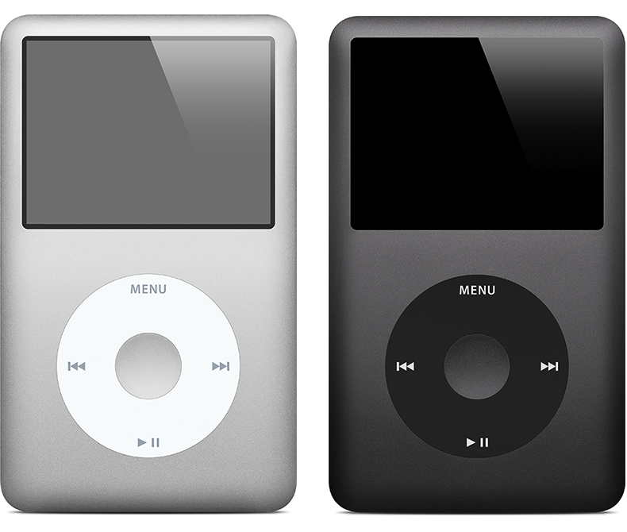
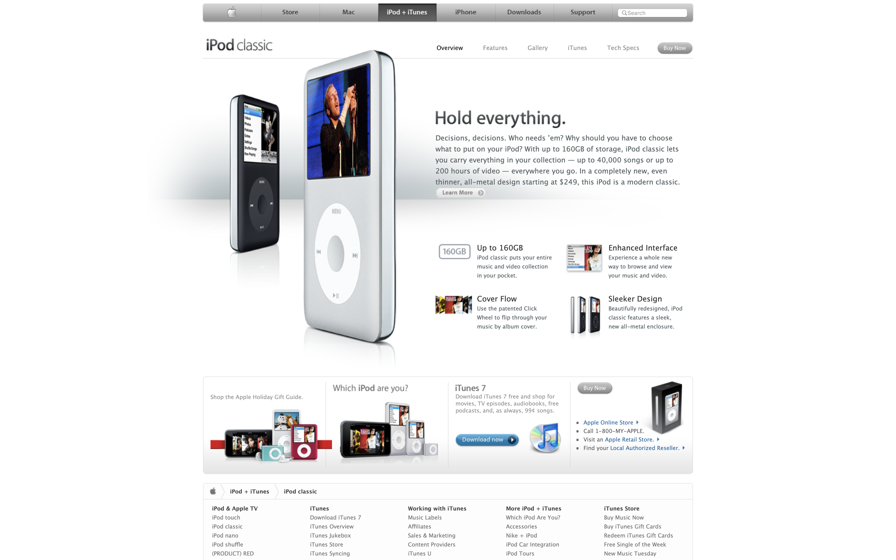

Hold everything.
Decisions, decisions. Who needs ’em? Why should you have to choose what to put on your iPod? With up to 160GB of storage, iPod classic lets you carry everything in your collection — up to 40,000 songs or up to 200 hours of video — everywhere you go. In a completely new, even thinner, all-metal design starting at $249, this iPod is a modern classic.
The iPod classic is a hard drive-based iPod featuring a large, widescreen color display, a Click Wheel, and the capability of displaying photos and videos. It uses USB for syncing.
 